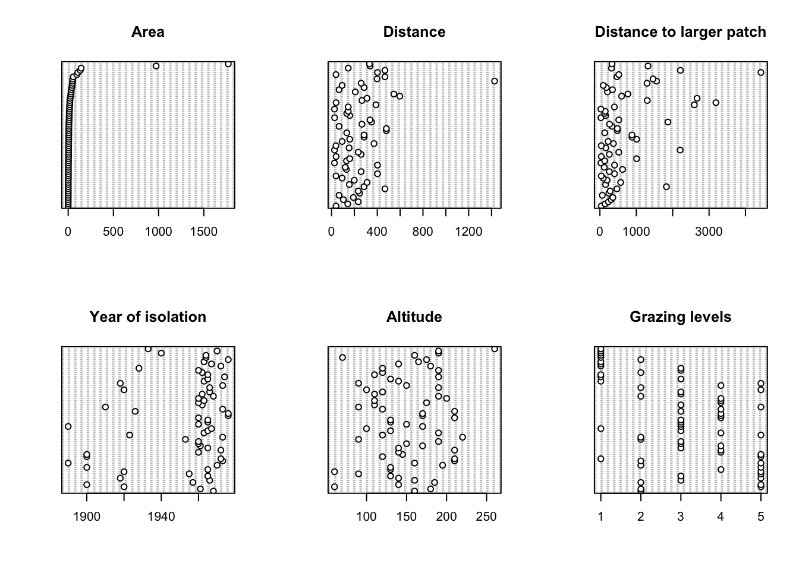
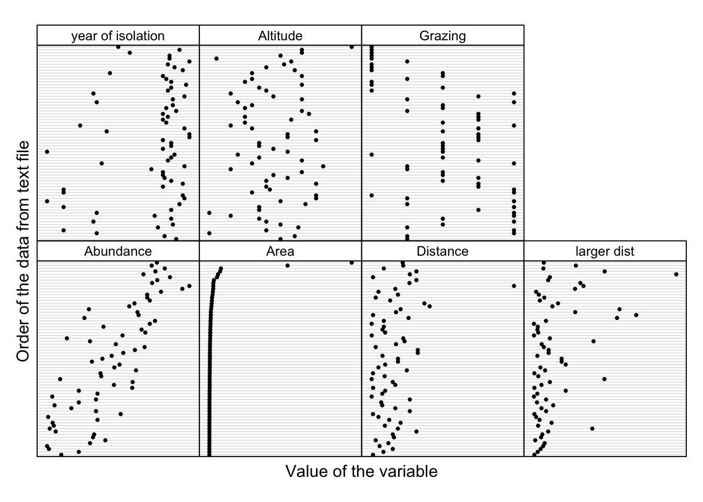
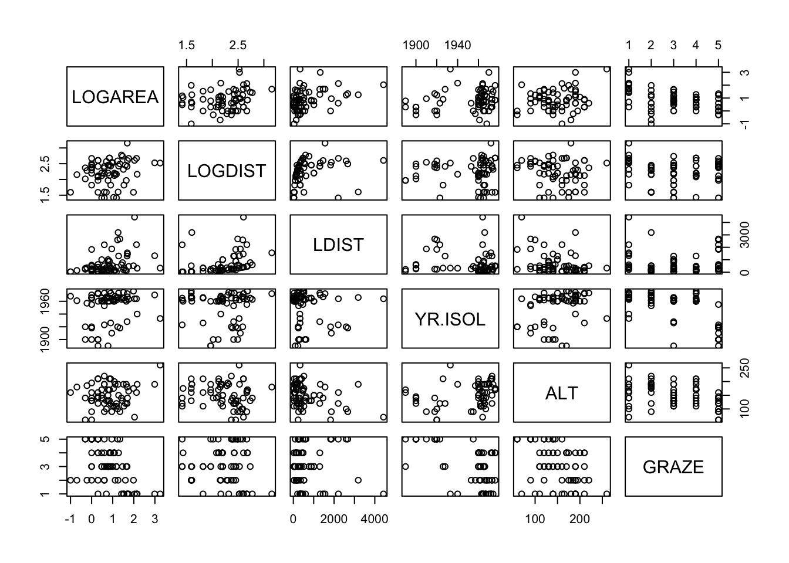
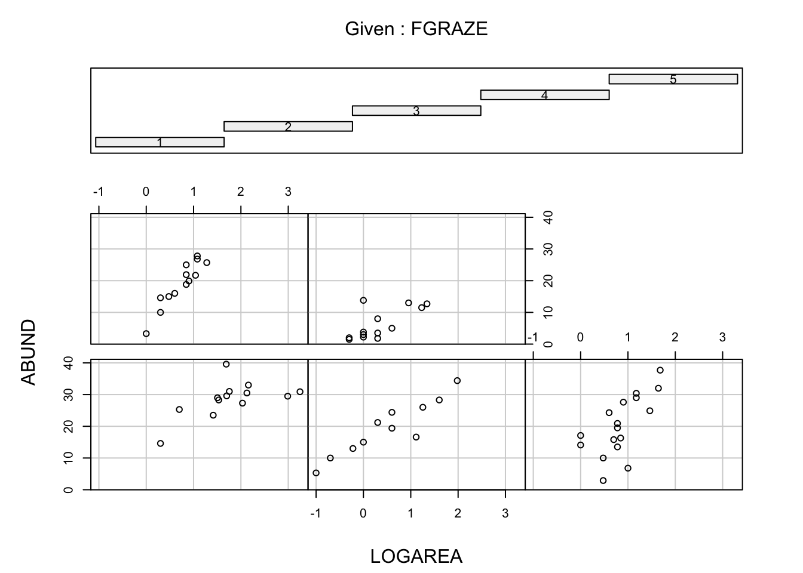

Exercise Solutions
Exercise: Graphical data exploration using R
1. Start RStudio on your computer. If you haven’t already done so, create a new RStudio Project (select File –> New Project on the main menu). Create the Project in a new directory by selecting ‘New Directory’ and then select ‘New Project’. Give the Project a suitable name (‘pgr_stats’ maybe) in the ‘Directory name:’ box and choose where you would like to create this Project directory by clicking on the ‘Browse’ button. Finally create the project by clicking on the ‘Create Project’ button. This will be your main RStudio Project file and directory which you will use throughout this course. See Section 1.6 of the Introduction to R book for more information about RStudio Projects and here for a short video.
Now create a new R script inside this Project by selecting File –> New File –> R Script from the main menu (or use the shortcut button). Before you start writing any code save this script by selecting File –> Save from the main menu. Call this script ‘graphical_data_exploration’ or something similar. Click on the ‘Files’ tab in the bottom right RStudio pane to see whether your file has been saved in the correct location. Ok, at the top of almost every R script (there are very few exceptions to this!) you should include some metadata to help your collaborators (and the future you) know who wrote the script, when it was written and what the script does (amongst other things). Include this information at the top of your R script making sure that you place a # at the beginning of every line to let R know this is a comment. See Section 1.10 for a little more detail.
2. If you haven’t already, download the data file
‘loyn.xlsx’ from the Data link
and save it to the data directory. Open this file in
Microsoft Excel (or even better use an open source equivalent - LibreOffice is
a good free alternative) and save it as a tab delimited file type. Name
the file ‘loyn.txt’ and also save it to the data
directory.
3. These data are from a study originally conducted by Loyn (1987)1 and subsequently re-analysed by Quinn and Keough (2002)2 and Zuur et al (2009)3. Note, I have had to do some slight ‘tweaking’ of these data to improve usability for this course. The aim of the study was to relate bird density in 67 forest patches to a number of different environmental variables and management practices. A summary of the variables is: ABUND: Density of birds, Continuous response; AREA: Size of forest patch, Continuous explanatory; DIST: Distance to nearest patch, Continuous explanatory; LDIST: Distance to nearest larger patch, Continuous explanatory; ALT: Mean altitude of patch, Continuous explanatory; YR.ISOL: Year of isolation of clearance, Continuous explanatory; GRAZE: Index of livestock grazing intensity, 5 level Categorical explanatory 1= low graze, 5 = high graze. Add a description of your variables to the metadata you created previously. Clearly highlight which variable is the response variable and which variables are potential explanatory variables.
4. Import your ‘loyn.txt’ file into R using the
read.table() function and assign it to an object called
loyn (checkout Section
3.3.2 if you need a reminder). Use the str() function
to display the structure of the dataset and the summary()
function to summarise the dataset. Copy and paste the output of
str() and Summary() to your R code as a
record. Don’t forget to comment this code with a # at the
beginning of each line (can you remember the keyboard shortcut?). How
many observations are in this dataset? How many variables does the
dataframe contain? Are there any missing values (coded as
NA) in any variable? How is the variable GRAZE
coded? (as a number or a string?). If you think this will cause a
problem (hint: it will!), create a new variable called
FGRAZE in the dataframe with
GRAZE recoded as a factor. See here to see
how to convert/coerce a numeric variable into a factor (TLDR: use the
as.factor() or factor() function).
loyn <- read.table("./data/loyn.txt", header = TRUE,
stringsAsFactors = TRUE)
str(loyn)
## 'data.frame': 67 obs. of 8 variables:
## $ SITE : int 1 60 2 3 61 4 5 6 7 8 ...
## $ ABUND : num 5.3 10 2 1.5 13 17.1 13.8 14.1 3.8 2.2 ...
## $ AREA : num 0.1 0.2 0.5 0.5 0.6 1 1 1 1 1 ...
## $ DIST : int 39 142 234 104 191 66 246 234 467 284 ...
## $ LDIST : int 39 142 234 311 357 66 246 285 467 1829 ...
## $ YR.ISOL: int 1968 1961 1920 1900 1957 1966 1918 1965 1955 1920 ...
## $ GRAZE : int 2 2 5 5 2 3 5 3 5 5 ...
## $ ALT : int 160 180 60 140 185 160 140 130 90 60 ...
# 67 observations and 8 variables (from str())
summary(loyn)
## SITE ABUND AREA DIST LDIST YR.ISOL GRAZE ALT
## Min. : 1.0 Min. : 1.50 Min. : 0.1 Min. : 26.0 Min. : 26.0 Min. :1890 Min. :1.00 Min. : 60.0
## 1st Qu.:17.5 1st Qu.:12.10 1st Qu.: 2.0 1st Qu.: 112.0 1st Qu.: 157.5 1st Qu.:1946 1st Qu.:2.00 1st Qu.:120.0
## Median :34.0 Median :19.40 Median : 7.0 Median : 208.0 Median : 345.0 Median :1963 Median :3.00 Median :150.0
## Mean :34.0 Mean :18.76 Mean : 58.7 Mean : 241.8 Mean : 678.0 Mean :1952 Mean :3.03 Mean :150.4
## 3rd Qu.:50.5 3rd Qu.:27.45 3rd Qu.: 20.5 3rd Qu.: 334.5 3rd Qu.: 826.0 3rd Qu.:1966 3rd Qu.:4.00 3rd Qu.:187.5
## Max. :67.0 Max. :39.60 Max. :1771.0 Max. :1427.0 Max. :4426.0 Max. :1976 Max. :5.00 Max. :260.0
# GRAZE is coded as numeric (i.e. 1,2,3,5)
# create a new factor variable variable FGRAZE which is a factor of GRAZE
loyn$FGRAZE <- factor(loyn$GRAZE)
5. Use the function table() (or xtabs()) to
determine how many observations are in each FGRAZE level.
See section
3.5 of the Introduction to R book to remind yourself how to do
this.
table(loyn$FGRAZE)
##
## 1 2 3 4 5
## 13 11 17 13 13
# or use xtabs function
xtabs(~ FGRAZE, data = loyn)
## FGRAZE
## 1 2 3 4 5
## 13 11 17 13 13
6. Using the tapply() function what is the mean bird
abundance (ABUND) for each level of FGRAZE?
Can you also determine the variance for each FGRAZE level?
Again see section 3.5
of the Introduction to R book to remind yourself how to do this.
# mean abundance of birds for each level of FGRAZE
tapply(loyn$ABUND, loyn$FGRAZE, mean, na.rm = TRUE)
## 1 2 3 4 5
## 28.623077 19.418182 20.164706 18.961538 6.292308
# variance in the abundance of birds for each level of FGRAZE
tapply(loyn$ABUND, loyn$FGRAZE, var, na.rm = TRUE)
## 1 2 3 4 5
## 32.63859 73.13364 89.42243 50.62923 23.10744
# OR use the summary function
tapply(loyn$ABUND, loyn$FGRAZE, summary, na.rm = TRUE)
## $`1`
## Min. 1st Qu. Median Mean 3rd Qu. Max.
## 14.60 27.30 29.50 28.62 30.90 39.60
##
## $`2`
## Min. 1st Qu. Median Mean 3rd Qu. Max.
## 5.30 14.00 19.40 19.42 25.20 34.40
##
## $`3`
## Min. 1st Qu. Median Mean 3rd Qu. Max.
## 2.90 14.10 19.50 20.16 27.60 37.70
##
## $`4`
## Min. 1st Qu. Median Mean 3rd Qu. Max.
## 3.30 15.00 19.90 18.96 25.00 27.80
##
## $`5`
## Min. 1st Qu. Median Mean 3rd Qu. Max.
## 1.500 2.200 3.800 6.292 11.500 13.800
7. Now onto some plotting action. Plot a Cleveland dotchart (Section
4.2.4) of each variable separately to assess whether there are any
outliers (unusually large or small values) in the response variable
(ABUND) or any of the continuous explanatory variables (see
Q3). If you feel in the mood, output these plots to an external PDF file
in an output directory within your RStudio project (don’t
forget to create the directory first).
# first split the plotting device into 2 rows
# and 3 columns
par(mfrow = c(2,3))
# now produce the plots
dotchart(loyn$AREA, main = "Area")
dotchart(loyn$DIST, main = "Distance")
dotchart(loyn$LDIST, main = "Distance to larger patch")
dotchart(loyn$YR.ISOL, main = "Year of isolation")
dotchart(loyn$ALT, main = "Altitude")
dotchart(loyn$GRAZE, main = "Grazing levels")
# A fancier version of a dotplot - just for fun!
Z <- cbind(loyn$ABUND, loyn$AREA, loyn$DIST,
loyn$LDIST,loyn$YR.ISOL,loyn$ALT,
loyn$GRAZE)
colnames(Z) <- c("Abundance", "Area","Distance",
"larger dist","year of isolation",
"Altitude", "Grazing")
library(lattice)
dotplot(as.matrix(Z),
groups=FALSE,
strip = strip.custom(bg = 'white',
par.strip.text = list(cex = 0.8)),
scales = list(x = list(relation = "free"),
y = list(relation = "free"),
draw = FALSE),
col=1, cex =0.5, pch = 16,
xlab = "Value of the variable",
ylab = "Order of the data from text file")
8. If you do spot any unusual observations have a think about what
you want to do with them (NOTE: do not just remove them
without justification!). If you’re unsure, please speak to an instructor
to discuss your options during the practical session. Perhaps you should
apply a data transformation to see if this reduces the magnitude of any
outlier. The best thing to do here is to play around with different
transformations (i.e. log, sqrt) to see which
one does what you want it to do. After you have applied these data
transformations make sure you re-plot your dotcharts with any
transformed variable to double check what the transformation is doing.
Hint: a log10 transformation might help reduce the magnitude
of the outliers for some of the variables.
# There appears to be two unusually large forest patches compared to the rest
# Also one potentially large distance in DIST
# One option would be to log10 transform AREA, DIST
# log base 10 transform variables
loyn$LOGAREA <- log10(loyn$AREA)
loyn$LOGDIST <- log10(loyn$DIST)
# check the dataframe
str(loyn)
## 'data.frame': 67 obs. of 11 variables:
## $ SITE : int 1 60 2 3 61 4 5 6 7 8 ...
## $ ABUND : num 5.3 10 2 1.5 13 17.1 13.8 14.1 3.8 2.2 ...
## $ AREA : num 0.1 0.2 0.5 0.5 0.6 1 1 1 1 1 ...
## $ DIST : int 39 142 234 104 191 66 246 234 467 284 ...
## $ LDIST : int 39 142 234 311 357 66 246 285 467 1829 ...
## $ YR.ISOL: int 1968 1961 1920 1900 1957 1966 1918 1965 1955 1920 ...
## $ GRAZE : int 2 2 5 5 2 3 5 3 5 5 ...
## $ ALT : int 160 180 60 140 185 160 140 130 90 60 ...
## $ FGRAZE : Factor w/ 5 levels "1","2","3","4",..: 2 2 5 5 2 3 5 3 5 5 ...
## $ LOGAREA: num -1 -0.699 -0.301 -0.301 -0.222 ...
## $ LOGDIST: num 1.59 2.15 2.37 2.02 2.28 ...
9. Next, check if there is any potential collinearity between any of
the explanatory variables. Remember, collinearity is
strong relationships between your explanatory variables. Plot
these variables using the pairs() function (Section
4.2.5). You will need to extract your explanatory variables from the
loyn dataframe (using []) either before you
use the pairs() function or whilst using it (don’t forget
to plot the transformed versions of any variables from Q8). Optionally,
include the correlation coefficient between variables in the upper panel
of the pairs plot (see section
4.2.5 of the introduction to R book for details) to help you decide
whether collinearity is an issue.
# Vanilla pairs plot
pairs(loyn[,c("LOGAREA", "LOGDIST", "LDIST",
"YR.ISOL", "ALT", "GRAZE")])
# or first create a new dataframe and then use this
# data frame with the pairs function
explan_vars <- loyn[,c("LOGAREA", "LOGDIST", "LDIST",
"YR.ISOL", "ALT", "GRAZE")]
pairs(explan_vars)
# And with correlations in the upper panel
# first need to define the panel.cor function
panel.cor <- function(x, y, digits = 2, prefix = "", cex.cor, ...){
usr <- par("usr"); on.exit(par(usr))
par(usr = c(0, 1, 0, 1))
r <- abs(cor(x, y))
txt <- format(c(r, 0.123456789), digits = digits)[1]
txt <- paste0(prefix, txt)
if(missing(cex.cor)) cex.cor <- 0.8/strwidth(txt)
text(0.5, 0.5, txt, cex = cex.cor * r)
}
# then use the panel.cor function when we use pairs
pairs(loyn[,c("LOGAREA","LOGDIST", "LDIST",
"YR.ISOL","ALT","GRAZE")],
upper.panel = panel.cor)
10. Now that we’ve checked for collinearity let’s assess whether
there are any clear relationships between the response variable
(ABUND) and individual explanatory variables. Use
appropriate plotting functions (plot(),
boxplot() etc) to visualise these relationships. Don’t
forget, if you have applied a data transformation to any of your
variables (Q8) you will need to plot these transformed variables instead
of the original variables. Also, don’t forget, you can split your
plotting device up to allow you to plot multiple graphs (Section 4.4)
or again use a function like pairs() to create a
multi-panel plot. Output these plots to the output
directory as PDFs. Add some comments in your R code to summarise your
findings.
pairs(loyn[,c("ABUND","LOGAREA","LOGDIST", "LDIST",
"YR.ISOL","ALT","GRAZE")],
lower.panel = panel.cor)
11. One of the main aims of this study was to determine whether
management practices such as grazing intensity (GRAZE) and
size of the forest (AREA) affected the abundance of birds
(ABUND). One hypothesis was that the size of the forest
affected the number of birds, but this was dependent of the intensity of
the grazing regime (in other words, there is an interaction between
AREA and GRAZE - don’t worry if you haven’t
heard of an interaction term, we will go through this later on in the
course). Use an appropriate plotting function to explore these data for
such an interaction (perhaps a coplot() or
xyplot() in Section
4.2.6 might be helpful?). Again, don’t forget, if you have applied a
data transformation to your AREA variable you need to use
the transformed variable in this plot not the original
AREA variable. Likewise, as we’ve converted the
GRAZE variable into a factor type variable we should use
our new factor FGRAZE (or whatever you have called it).
Save this plot as a PDF to your output directory and add
some comments to your R code to describe any patterns you observe.
# Interaction between LOGAREA and FGRAZE?
# Do the slopes look similar or different?
coplot(ABUND ~ LOGAREA | FGRAZE, data = loyn)
# Fancier version of the above plot
# with a line of best fit included just for fun
coplot(ABUND ~ LOGAREA | FGRAZE,
data = loyn,
panel = function(x, y, ...) {
tmp <- lm(y ~ x, na.action = na.omit)
abline(tmp)
points(x, y) })
1 Loyn, R. (1987). Effects of patch area and habitat on bird abundances, species numbers and tree health in fragmented Victoria forests. Nature conservation: the role of remnants of native vegetation. 65-77.
2 Quinn, G. P., and Michael J. Keough. 2002. Experimental design and data analysis for biologists. Cambridge, UK: Cambridge University Press.
3 Zuur, A.F., Ieno, E.N. and Elphick, C.S. (2010), A protocol for data exploration to avoid common statistical problems. Methods in Ecology and Evolution, 1: 3-14. doi:10.1111/j.2041-210X.2009.00001.x
End of Graphical data exploration using R Exercise